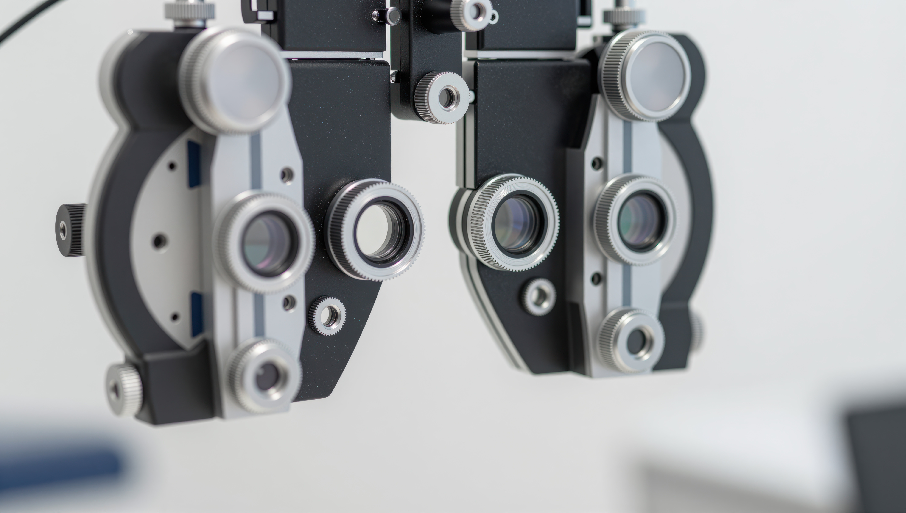

Vcare's Optical Treatments
At Vcare Opticals, our promise is to deliver exceptional eye‑care services with compassion, accuracy, and dedication. Whether you are experiencing vision concerns, need a new set of frames, or simply want an eye check‑up, our experienced staff are here to support you.
Vcare's Annual Eye Checkup Package Includes the following services:
- Vision Assessment
- A detailed examination of vision clarity, depth perception, and colour vision.
- Eye‑Health Screening
- Checks for early signs of eye diseases such as cataracts and glaucoma.
- Retinal Imaging
- Advanced imaging to analyse retinal health.
- Prescription Update
- Reviewing and updating glasses or contact lens prescriptions.
- Lifestyle & Visual‑Care Discussion
- Guidance on screen habits, lighting, and eye‑care routines.

We also offer these services solitarily - but please call us at 07 5111 4488
To book our first-class services and receive your annual test, contact us HERE